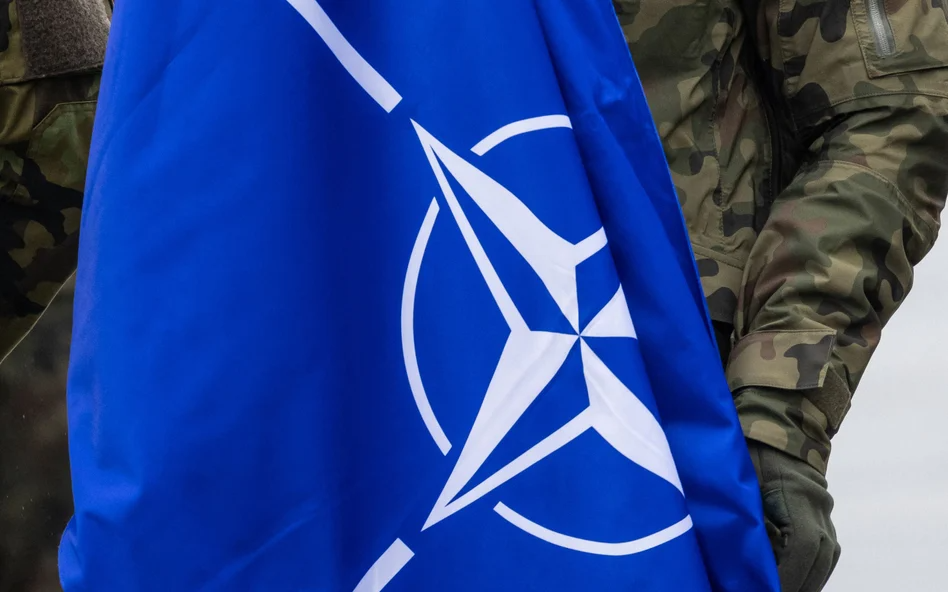

ЛБ. / Події / Світ / Військовий конфлікт
Мірослав Жуковський: Олімпіада в Парижі – Росія йде до війни
Глава Міжнародного олімпійського комітету Томас Бах мав право очікувати подяки від Росії та Володимира Путіна. Не дожив – отримав удар.
Опубліковано: 21.03.2024 13:43

Ті, хто відчуває на своїй спині подих імперської Росії, могли б впевнено назвати Томаса Баха (на фото) «корисним ідіотом».
Фото: EPA/LAURENT GILLIERON
Мирослав Жуковський
Протягом багатьох років, після допінгового скандалу під час Ігор у Сочі в 2014 році,
Томас Бах дозволяв росіянам брати участь в Олімпіаді .
Хоча не було ні прапора, ні гімну, це не завадило путінській пропаганді вихваляти своїх олімпійців. Війна в Україні також не зробила Росію поза законом. МОК дозволив своїм спортсменам взяти участь у Парижі за умови, що
вони не будуть пов'язані з силами і не будуть відкрито демонструвати підтримку війни .
Це з самого початку була подвійна фікція: в Росії такого спортсмена важко знайти, а достовірно його перевірити ще важче. Надання рішення про допуск чи виключення росіян у певних видах спорту до міжнародних федерацій також було ухиленням, адже відомо, що багатьма з них керує Путін, а в деяких з них росіяни досі керують майже напряму.
Читати далі
ОЛІМПІЗМ
МОК зробив заяву. Російські Дружби є «ворожими та цинічними»
Міжнародний олімпійський комітет у вівторок опублікував заяву, в якій назвав план Росії...
Олімпіада без Росії та без Ізраїлю?
Тому ті, хто, як і ми, відчувають на своїй спині подих імперської Росії, могли б
впевнено назвати Баха «корисним ідіотом» .
Навіть більше, ставитися до нього як до циніка, який, можливо, як і його співвітчизник і колишній канцлер ФРН Герхард Шредер, розраховує, що після закінчення олімпійської служби він сяде в раду директорів «Газпрому» чи іншої «Роснефти».
Сьогодні добре видно, що з цього нічого не вийде, бо Росія з кожним місяцем війни стає все нахабнішою і замість того, щоб із вдячністю їсти з руки Баха, вона боляче її вкусила. Проривом стало рішення Путіна
організувати власні ігри у Москві та Єкатеринбурзі у вересні
та запросити не лише союзників, а й увесь спортивний світ, супроводжуючи запевненнями, що це будуть справді універсальні олімпійські змагання.
Читати далі
СПОРТ
МОК зробив заяву. Російські Дружби є «ворожими та цинічними»
Томас Бах очолюватиме Міжнародний олімпійський комітет (МОК) до 2025 року, але деякі хочуть, щоб...
Це реальна загроза. МОК усвідомлює, що, як і у великій політиці, Росія може розраховувати на підтримку Китаю, Індії, багатьох країн Африки, Азії та Південної Америки, а ізраїльсько-палестинський конфлікт дедалі більше обурює громадську думку, також у західних країнах. готові прийняти точку зору, що якщо Паризькі ігри будуть проводитися без росіян, вони також повинні проводитися без Ізраїлю.
Томас Бах став мішенню російської пропаганди
Наразі пропозицію стартувати без прапора та гімну росіяни вважають принизливою, але бойкотом не погрожували. Лише рішення не допустити своїх спортсменів до церемонії відкриття змусило їх розгорнути свою пропаганду. Томас Бах пройшов шлях від людини, яка неодноразово пила шампанське з Путіним, до керівника організації, що скочується до расизму та неонацизму – і не з вуст слухняних режиму спортсменів чи пропагандистів, а з вуст представників російської влади. Саме так речниця російського МЗС охарактеризувала його як "главу расистської та неонацистської організації".
Можна, звісно, дискутувати, чи не краще направити до цього комітету когось із Польщі, Латвії та Румунії, бо вони краще орієнтуються в реаліях
Бах — німець, тому назвати його неонацистом для нього має бути особливо боляче, і, мабуть, це можна трактувати як оголошення Росією олімпійської війни, в якій не буде місця для переговорів. Тим паче, що МОК нарешті досить серйозно взявся за перевірку спортсменів, які вийдуть на Олімпіаду. Він призначив комісію з трьох осіб (віце-президент МОК, колишня синхроністка Ніколь Ховерцз з Аруби, південнокорейський гравець у настільний теніс Ю Син Мін та зірка іспанського баскетболу Пау Газоль) для перевірки кожного російського спортсмена за критеріями, встановленими МОК.
Можна, звісно, дискутувати, чи не краще було б відправити до цієї комісії когось із Польщі, Латвії та Румунії, адже вони краще розбираються в реаліях, але це все-таки прогрес у порівнянні з порожніми словами МОК, які були в силі. протягом багатьох років.
Читати далі
СПОРТ
МОК зробив заяву. Російські Дружби є «ворожими та цинічними»
Томас Бах очолюватиме Міжнародний олімпійський комітет (МОК) до 2025 року, але деякі хочуть, щоб...
Олімпійський рух пережив той конфлікт, і ніякі Ігри дружби (що проходили в 1984 році в Москві для тих, кого СРСР змусив бойкотувати Лос-Анджелес) не підірвали престиж справжніх ігор, але порятунок прийшов не в олімпійській сім’ї, а у великій політиці. Михайло Горбачов почав правити Росією, і тому бойкотів більше не було.
Якби ця історія повторилася, довелося б чекати падіння Путіна, яке сьогодні важко уявити. Більш ймовірна пропагандистська війна, в якій на кону буде поставлена доля Олімпіади.
Пов'язано
Рекомендований
Останній
Армія
Війна через три роки? Ген. Скшипчак: Нам погрожують найгіршими...
У разі війни цивільна оборона є дуже важливою, це питання підготовки нації до виживання, – сказав...
Армія
Війна через три роки? Ген. Скшипчак: Нам погрожують найгіршими...
У разі війни цивільна оборона є дуже важливою, це питання підготовки нації до виживання, – сказав...
Армія
Війна через три роки? Ген. Скшипчак: Нам погрожують найгіршими...
У разі війни цивільна оборона є дуже важливою, це питання підготовки нації до виживання, – сказав...
Армія
Війна через три роки? Ген. Скшипчак: Нам погрожують найгіршими...
У разі війни цивільна оборона є дуже важливою, це питання підготовки нації до виживання, – сказав...
Армія
Війна через три роки? Ген. Скшипчак: Нам погрожують найгіршими...
У разі війни цивільна оборона є дуже важливою, це питання підготовки нації до виживання, – сказав...